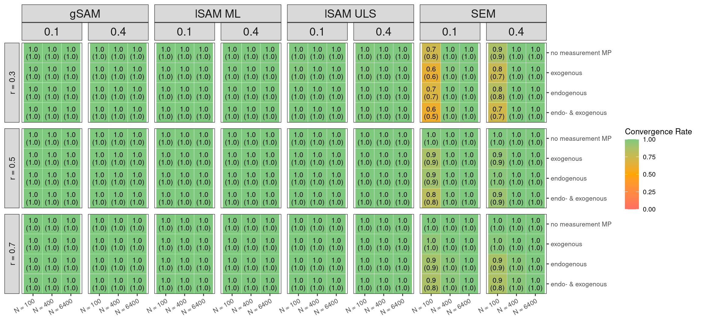
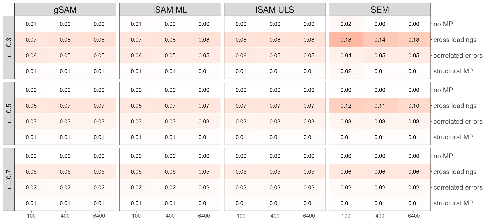

Introduction
Methods
A Framework for Adversarial Collaboration
Methods of Individual Simulation Studies
Studies by Kriegmair
The following description of the methodological setup of my individual simulation studies is based on the structure for simulation studies we established to follow the adversarial simulation framework we established and thus facilitate collaboration. As outlined in this initial phase of our case study, I conducted two separate simulation studies independently of my collaborator.
Aims, objectives and research questions
Both studies aimed to evaluate the performance of vanilla SEM (with maximum likelihood) compared to global SAM (gSAM), local SAM with maximum likelihood (lSAM-ML), and local SAM with unweighted least squares (lSAM-ULS) under various conditions. The two research questions we jointly established prior to conducting the studies served as general basis for both studies:
- How do SAM and traditional SEM methods (including ML and ULS) compare in terms ofbias, Mean Squared Error (MSE), and convergence rates in small to moderate samples?
- What is the impact of model misspecifications, such as residual correlations and cross-loadings, on the performance of SAM compared to traditional SEM methods?
These indivudal studies represent a conceptual replication of the studies conducted by @rosseel_structural_2022 and @dhaene_evaluation_2023. However, these studies just served as a basis for the design and several adjustments were made as described below.
Population Models and Data Generation Mechanisms
Study 1
Data were generated based on a 5-factor population structural model with 3 indicators for each factor. Four different models were simulated (see figure 1-4). In line with @rosseel_structural_2022 this model design was chosen to represent a realistic model with sufficient complexity to pose a challange for the estimation methods, especially in the presence of misspecifications:
- Model 1.1: Correctly specified model.
- Model 1.2: Misspecified with cross-loadings in the population model that are ignored in the estimation model (model 1.1)
- Model 1.3: Misspecified with correlated residuals and a reversed structural path between the third and fourth latent factors in the population model that are ignored in the estimation model (model 1.1)
- Model 1.4: Misspecified with a bidirectional structural relation between factors 3 and 4 specified as only one directional
To investigate additioanl possible and realisitic scenarios beyond the ones studied by @rosseel_structural_2022 model 1.3 here included a combination of measuremnt and structural misspecifications as opposed to only measurement misspecifications to introduce an even more severly misspecified model under which SAM methods might perform even better than traditional SEM. Further, model 1.4 included a (not estimated) bidirectional structural relation between factors 3 and 4 as opposed to the unidirectional reversed one. For all models, the population-level values of the structural parameters were set to 0.1. Factor loadings were fixed across all reliability conditions, with the first indicator of each factor serving as the scaling indicator (\(\lambda\) = 1.0), and the other two indicators having loadings of 0.7. Indicator reliability levels were manipulated by adjusting the measurement error variances in the \(\Theta\) matrix. Specifically, the a reliability value was set at different levels (low = 0.3, moderate = 0.5 or high = 0.7) to compute the respective error variances on the diagonal of \(\Theta\): \(\Theta^{*} = \text{Var}(\eta)\Lambda^{T} \times \frac{1}{r - 1}\).
Error terms are not explicitly shown in the figure. Dashed lines represent relations omitted in the estimation model present in the population model.”
Study 2:
Data were generated based on a 5-factor population structural model with 3 indicators for each factor with loadings set to 1, 0.9 and 0.8 for each factor and reliability modulated like in study 1. Regression weights were set to either 0.183 and 0.224 (low) or 0.365 and 0.447 (medium). This should represent varying variance explained (\(R^2\)) by the endogenous factors set at low (\(R^2 = 0.1\)) or medium (\(R^2 = 0.4\)). Note however that the computation of this was a simplification and does not accurately result in said \(R^2\) values. The aim here was only to generally modulate between lower and higher regression weights. The population models resulted in the following model types with varying misspecification in the estimation model:
Model 2.1: structural misspecifcation with falsely specified paths in the estimation model absent in the population model (Figure 5)
Model 2.2: correlated residuals and a factor cross-loading in either the exogenous (Model 2.2-exo), endogenous (Model 2.2-endo) part of the model or both (Model 2.2-both) with falsely specified paths in the estimation model absent in the population model (see figure 5-6).
Error terms are not explicitly shown in the figure. Dotted paths represent relations specified in the estimation model not present in the population model. For Model 2.2, orange lines represent misspecifications in the exogenous part of the model, and green lines represent misspecifications in the endogenous part of the model. These types of misspecifications result in different realizations of model 2.2 when they are modulated as factors in study 2 but are subsumed under one model here.
Experimental Design of simulation procedures
Study 1
Study 1 varied three main conditions: (1) sample sizes of small (\(N = 100\)), moderate (\(N = 400\)), and large (\(N = 6400\)); (2) Indicator reliability of low (\(= 0.3\)), moderate (\(0.5\)), high (\(= 0.7\)); (3) Model specifications: correctly specified model and misspecified with not specified cross loadings in the population model (see figure 2), misspecified with not-specified correlated residuals and a reversed structural path between the the third and the fourth latent factor in the population model (see figure 3) and a recursive structural relation between factor 3 and 4 in the population specified as only one directional (see figure 4).
Study 2
Study 2 varied five conditions: (1) sample sizes: small (\(N = 100\)), medium (\(N = 400\)), and large (\(N = 6400\)). (2) Variance explained by endogenous factors: low (\(R^2 = 0.1\)) and medium (\(R^2 = 0.4\)). (3) Indicator reliability: low (\(0.3\)), moderate (\(0.5\)), and high (\(0.7\)). (4) Model misspecifications: varying the population model by omitting a residual covariance and a factor cross-loading in different parts of the model. (5) Number of measurement blocks: separate measurement model per latent variable (\(b = 5\)) and joint measurement model for all exogenous variables (\(b = 3\)) for the local SAM condition (lSAM-ML).
Study 3
Study 3 varied three conditions: (1) sample sizes of very small (\(N = 50\)), small (\(N = 100\)) or moderate (\(N = 400\)). (2) Indicator reliability of low (\(= 0.3\)), moderate (\(0.5\)) or high (\(= 0.7\)); (3) Model misspecifications with not-specified cross loadings in the population model that were positive or negative (see figure ) or not-specified correlated residuals in the population model that were postive or negative (see figure 8).
Method Selection
All studies compared the performance of four estimation methods: Vanilla SEM with maximum likelihood (ML), Global SAM with maximum likelihood (gSAM), Local SAM with maximum likelihood (lSAM-ML), Local SAM with unweighted least squares (lSAM-ULS).
Performance Measures
For both studies convergence rates were tracked via lavaan’s built-in function that indicates convergence. Further, improper solutions, converged models that showed negative variances (as the only type of improper solution present), were tracked via lavaan warning messages. Next of all converged and propper solutions bias (\(\bar{T} - \theta\)), and RMSE (\(\sqrt{\frac{1}{K} \sum_{k=1}^{K} (T_k - \theta)^2}\)) where \(T_k\) is the estimated parameter, \(\bar{T}\) the mean of the estimated parameters and \(\theta\) the true parameter value, and \(K\) is the number of replications computed. For comparability across varying regression weights for study 2, relative bias (\(\frac{\bar{T} - \theta}{\theta}\)) and relative RMSE (\(\sqrt{\frac{(\bar{T} - \theta)^2 + S_T^2}{\theta^2}}\)) were computed. Monte Carlo standard errors (MCSE) were computed for bias and RMSE as well as relative bias and relative RMSE: \(\sqrt{\frac{S_T^2}{K}}\) and \(\sqrt{\frac{S_T^2}{K\theta^2}}\) for bias and relative bias, and \(\sqrt{\frac{K-1}{K} \sum_{j=1}^{K} \left( \text{RMSE}_{(j)} - \text{RMSE} \right)^2}\) and \(\sqrt{\frac{K-1}{K} \sum_{j=1}^{K} \left( rRMSE_{(j)} - rRMSE \right)^2}\) for RMSE and relative RMSE.
Software
All analyses were conducted in @r_core_team_r_2023. Simulation and estimation was done using @rosseel_lavaan_2012. To ensure reproducability and avoid synchronization in parallelized a pre-generated list of seeds was used for all replications. For further details and a complete list of libraries, visit https://github.com/valentinkm/AdversarialSimulation.
Analysis and Interpretation plan
Similar to the studies by @rosseel_structural_2022 and @dhaene_evaluation_2023 results were interpreted by descriptively comparing the performance measures of the different estimation methods under varying sample sizes, indicator reliability levels, and model misspecifications without predetermined cut-off values or critical distances. Performance metric values were aggregated across all parameters excluding the misspecified parameters (present in the population but not in the estimation model).
Studies by Kosanke
Methods
The structure of this section closely aligns to our agreed upon structure of simulation studies in Table 1.
In a first step, I published a simulation protocol containing all the planned analysis to be replicated from the original paper by @robitzsch_comparing_2022. This protocol can be accessed here: https://github.com/lkosanke/AdversarialSimulation/blob/main/LK/simulation_protocol.pdf.
Aims, objectives and research questions
For my individual study, I replicated parts of @robitzsch_comparing_2022 that were relevant to our two substantive research questions. Overall, I conducted 6 simulation studies.
Population Models and Data Generation Mechanisms
The most important details with regards to the population models and data-generating mechanisms are visible in Table 7. With regards to the population models, all factors in all studies loaded onto 3 indicators each. I chose the population values to align with the original paper by @robitzsch_comparing_2022. The multivariate normally distributed data was generated parametrically, based on a specified population model. All simulations were conducted using seeds to allow for the reproducibility of results.
For more details on the exact values of each study, see the simulation scripts in the Github repository.
\(\Phi\): factor correlation, N: sample size, \(\lambda\): factor loading, \(\sigma\): residual variance, \(\tau\): factor variance, RC: residual correlations, CL: cross-loadings, CFA: confirmatory factor analysis, \(\beta\): regression coefficient between factors.
Overview of Simulation Studies conducted by Kosanke
Experimental Design of simulation procedures
Overall, 3 different types of factors were varied that can be deduced from Table 7 and are detailed again in the simulation scripts provided.
Firstly, I varied the sample size in all studies, ranging from N = 50 to 100.000. I included a smaller sample size N=50 for all studies, to be able to answer our substantive research questions in more detail. Study 1b explicitly investigated the small sample bias of LSAM estimation in low sample sizes. Thus, only N=50 and N=100 were present in this study.
Additionally, I varied the amount of misspecification in all studies, either via different numbers of unmodelled residual correlations, cross-loadings, or both.
Thirdly, in Studies 1b and 4a, I varied the population values for three model parameters (phi, beta and/ or lambda).
Besides studies 1 and 2, I implemented full factorial designs. In Studies 1 and 2 I omitted conditions were both one positive and one negative value would be present. I hypothesize that this was done in @robitzsch_comparing_2022 to avoid cancellation of biases, but the authors did not give reasoning for this decision themselves.
In Studies 4 and 4a I investigated the differential performance of the estimators in a model that included a non-saturated structural model (i.e. regressions between some of the factors). These studies were replications not only of the paper by @robitzsch_comparing_2022, but of the first paper on the SAM approach by @rosseel_structural_2022. In contrast to the other studies, studies 4 and 4a differed in the way the misspecification variation was labelled in @robitzsch_comparing_2022. Instead of varying a factor misspecification as in the previous study, they varied 3 different data-generating mechanisms (DGM’s) as a whole. Thus the conditions are labelled differently: DGM 1 contained no misspecification. DGM 2 contained 5 cross-loadings in the data-generating model, that were not modelled in the estimated models. DGM 3 contained 20 residual correlations that were not modelled in the models. I extended them to investigate the interaction of beta and N for the 5-factor regression model, as this again was of interest four our substantial research questions. Additionally, I omitted the inclusion of DGM 1 in Study 4a, as it neither contained misspecification (which is central to our research question), nor did it lead to interesting results in the original study.
Method Selection
In terms of estimation methods, I used constrained SEM maximum-likelihood (SEM-ML) and unweighted-least-squares estimation (SEM-ULS), so that loadings and variance parameters were given the constraints that they had to be positive and larger than 0.01. Additionally, I implemented local-SAM (LSAM) and global-SAM (GSAM) estimation, in both maximum-likelihood (LSAM-ML/ GSAM-ML), and unweighted-least-squares estimation (GSAM-ML/ GSAM-ULS) contexts. Exceptions were studies 1b, 4 and 4a, where only LSAM was investigated, as results did not really differ between the two different SAM-methods [@robitzsch_comparing_2022].
Performance Measures
I calculated the bias and RMSE of the estimated factor correlations in all studies, as well as the standard deviation of the one factor correlation present in Studies 1,2 and 3. For the type of bias calculated, I oriented on @robitzsch_comparing_2022, besides in Study 1b. Thus, I calculated average relative bias in Studies 1, 2 and 3, and average absolute bias in Studies 1b, 4 and 4a. In Study 1b, I took the absolute value to see if negative and positive biases canceled each other out in the original study for conditions with lower phi values. In addition to what was done in @robitzsch_comparing_2022, I calculated confidence intervals for the bias estimates, but omitted them in the results tables for presentation purposes. The exact computation of the performance measures is detailed in the simulation scripts and results.pdf file in my sub-folder of the Github repository.
I did not include a detailed mechanism to capture model convergence as detailed in the first substantive research question. As @robitzsch_comparing_2022 argued in their paper, and was shown already in other simulations, using constrained maximum likelihood estimation should resolve convergence issues of classical maximum likelihood estimation in smaller samples [@ludtke_comparison_2021; @ulitzsch_alleviating_2023]. I did include, however, a mechanism to track the total number of warnings for each estimation and compare it to the total number of estimations as a sanity check.
Software
All analyses were conducted in R [@r_core_team_r_2023]. I used the packages lavaan, purrr, tidyverse, furrr to conduct the simulations, as well as knitr and kableExtra for presenting the results [@rosseel_lavaan_2012; @purrr; @tidyverse; @furrr; @knitr; @zhu_kableextra_2024] .
Analysis and Interpretation plan
For the interpretation of results, I oriented on cut-offs that were used in the original paper by @robitzsch_comparing_2022. For bias, I interpreted differences of 0.05 or higher as substantial. For SD, I explicitly mentioned percentage reductions of more or equal to 5%. For RMSE, the same interpretation was used for differences of 0.03 or higher. The simulation was repeated 1500 times for each Study.
Methods of “Joint” Simulation Study
After collaborating based on the individual studies conducted by Kosanke and my individually conducted studies
After examining the studies conducted by Kosanke and study 1 and 2 we did not jointly arrive at the conclusion that a collaborative simulation study is warrented (see Discussion for more detail).
The third study was conducted as a result of the collaboration with Kosanke and the respective studies conducted. However I identified several arguments for setting up another simulation. Firstly, to test and evaluate the viability and technical fesability of AC for simulation studies, setting up a study based on the individual studies, their results and with Kosanke can provide valuable
Aims, objectives and research questions
Following our framework for collaboration the research question for the joint study
Population Models and Data Generation Mechanisms
Study 3
As in study 1 and 2 data for study 3 was generated based on a 5-factor population structural model with 3 indicators for each factor. Factor loadings and indicator reliability was computed in the same way as in study 1. Two different population models were simulated that resulted in misspecifications of either omitted crossloadings (model 3.1) or omitted correlated residuals (model 3.2). The population-level values of the structural parameters were set to 0.1. Reliability levels were manipulated as in Study 1. The omitted crossloadings (see figure 7) could either be all positive or negative and were set to be 10% lower in absolute values than the factor loadings. Correlated residuals were also either all positive or all negative and were set to not exceed a factor of 0.6 of the residual variances of the indicators.
Experimental Design of simulation procedures**
Results
Results of Individual Simulation Studies
Results of Kriegmair’s Simulation Studies

Convergence and proper solutions (in parentheses) rates across sample sizes (N), reliability (r), and model misspecifications for global SAM (gSAM), local SAM with Maximum Likelihood (lSAM-ML), Unweighted Least Squares (lSAM-ULS), and SEM.
Convergence and proper solutions (in parentheses) rates across sample sizes (N), reliability (r), and model misspecification location for global SAM (gSAM), local SAM with Maximum Likelihood (lSAM-ML), Unweighted Least Squares (lSAM-ULS), and SEM.

Convergence and (proper solutions) rates across sample sizes (N), reliability (r), for global SAM (gSAM), local SAM with Maximum Likelihood (lSAM-ML), Unweighted Least Squares (lSAM-ULS), and SEM with cross-loadings (CL) and correlated residuals (CR).

Mean bias (unnormed) for each parameter across sample sizes (N), reliability (r) and misspecifications for global SAM (gSAM), local SAM with Maximum Likelihood (lSAM-ML), Unweighted Least Squares (lSAM-ULS), and SEM
Mean bias averaged (in absolute values) over all parameters in one model for sample sizes (N), reliability (r), and misspecifications for global SAM (gSAM), local SAM with Maximum Likelihood (lSAM-ML), Unweighted Least Squares (lSAM-ULS) and SEM.

Relative average bias for each parameter across sample sizes (N), reliability (r), and misspecifications for global SAM (gSAM), local SAM with Maximum Likelihood (lSAM-ML), Unweighted Least Squares (lSAM-ULS), and SEM.
Mean bias (unnormed) for each misspecified parameter (0 in population) across sample sizes (N), reliability (r), and misspecifications for global SAM (gSAM), local SAM with Maximum Likelihood (lSAM-ML), Unweighted Least Squares (lSAM-ULS), and SEM.
Mean relative bias averaged over all parameters in one model for sample sizes (N), reliability (r), and misspecifications for global SAM (gSAM), local SAM with Maximum Likelihood (lSAM-ML), Unweighted Least Squares (lSAM-ULS), and SEM.
Absolute Average Bias of Regression Parameters (Study 3)
Note. This figure shows the average absolute bias values for each parameter in the different conditions of simulation study 3.
Aggregated Bias of Regression Parameters
Note. Tis figure shows the aggregated bias (absolute values) of the estimated regression parameters for the different methods and conditions.
Results of Kosanke’s Simulation Studies
Results of the “Joint” Simulation Study
Results of the Adversarial Collaboration
Discussion
Discussing the substanital results
Disucssing the Adversarial Collaboration
Idea: living simulations…